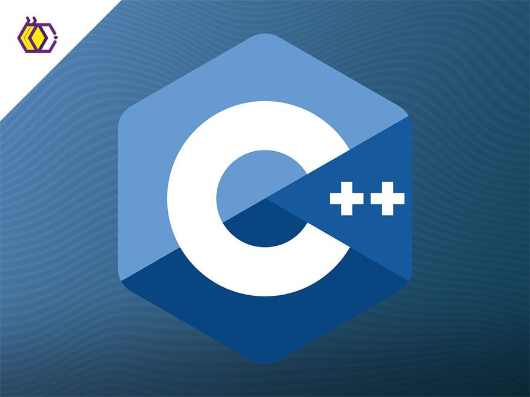
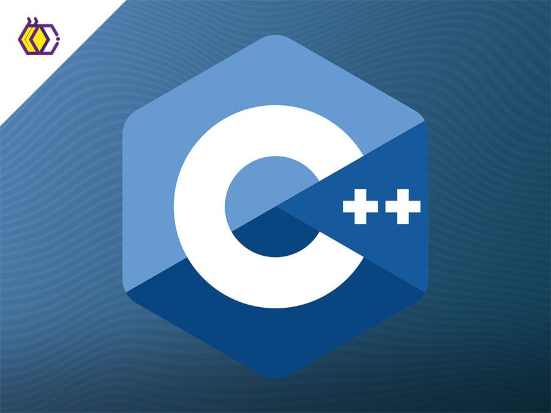
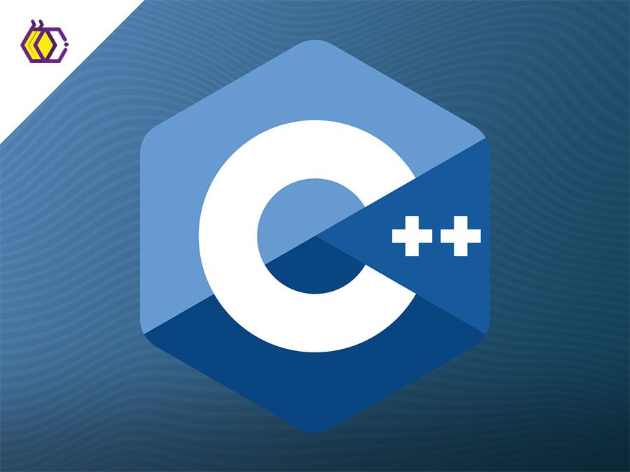
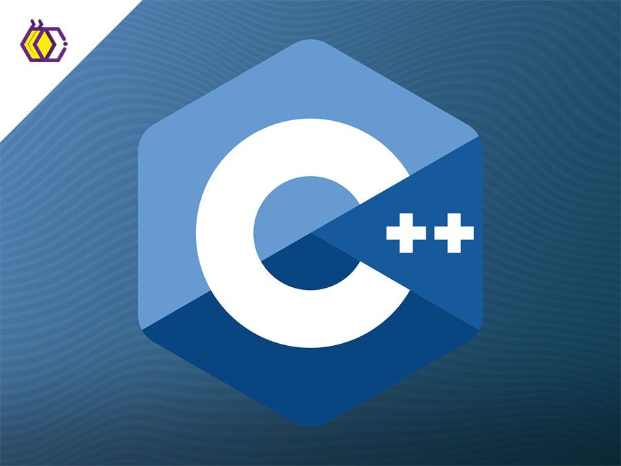
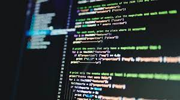
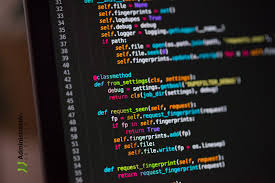
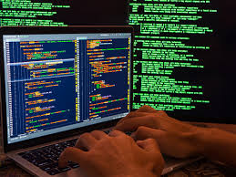
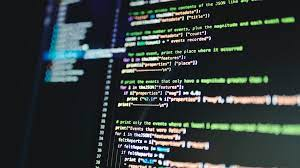
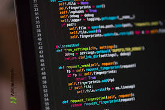
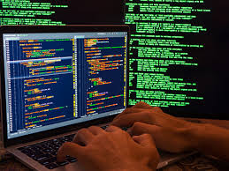

A continuación te vamos a mostrar algunos lenguajes de Programación para Backend:
Java es un lenguaje de programación que sirve para crear una amplia variedad de aplicaciones, desde programas de escritorio hasta sistemas empresariales complejos, aplicaciones móviles y servidores web.
PHP, acrónimo de "Hypertext Preprocessor", es un lenguaje de programación de propósito general, ampliamente utilizado para el desarrollo de aplicaciones web dinámicas.
C++ es un lenguaje de programación de propósito general y orientado a objetos que se utiliza para desarrollar una amplia gama de aplicaciones, desde sistemas operativos hasta videojuegos y software de alto rendimiento.


 




